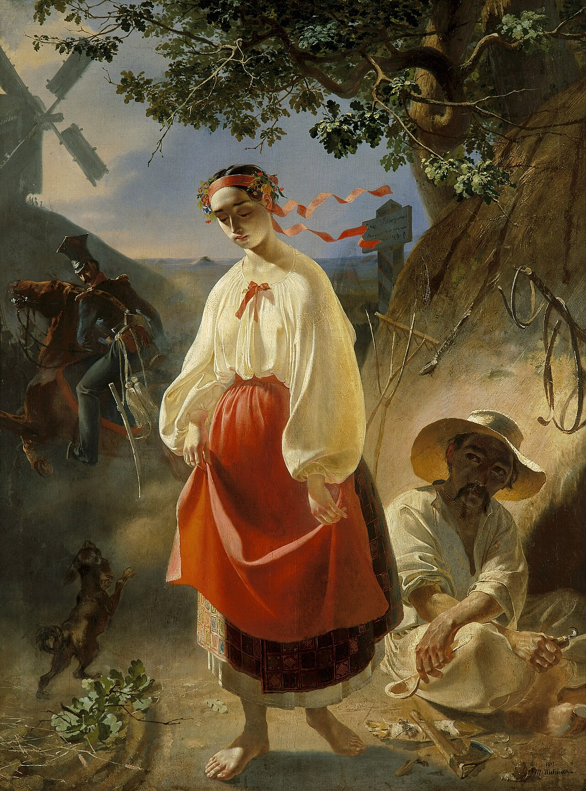
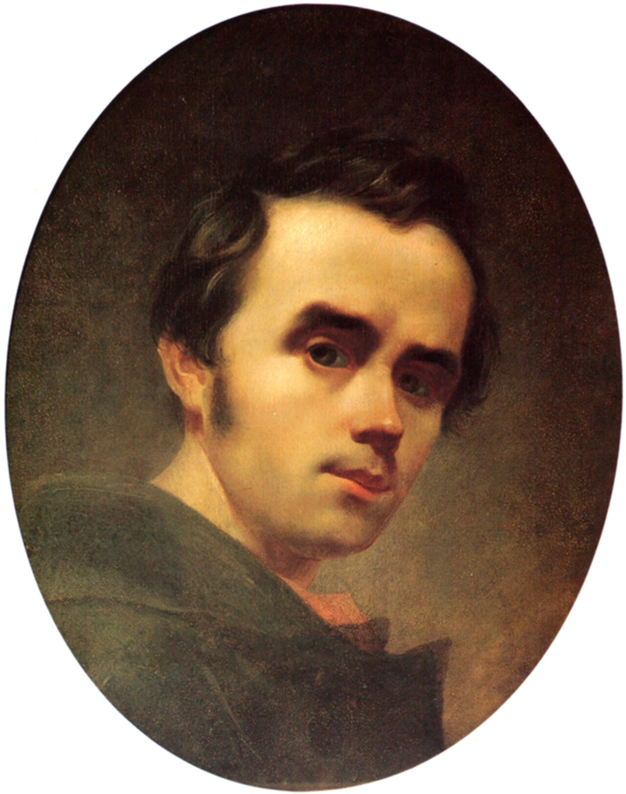
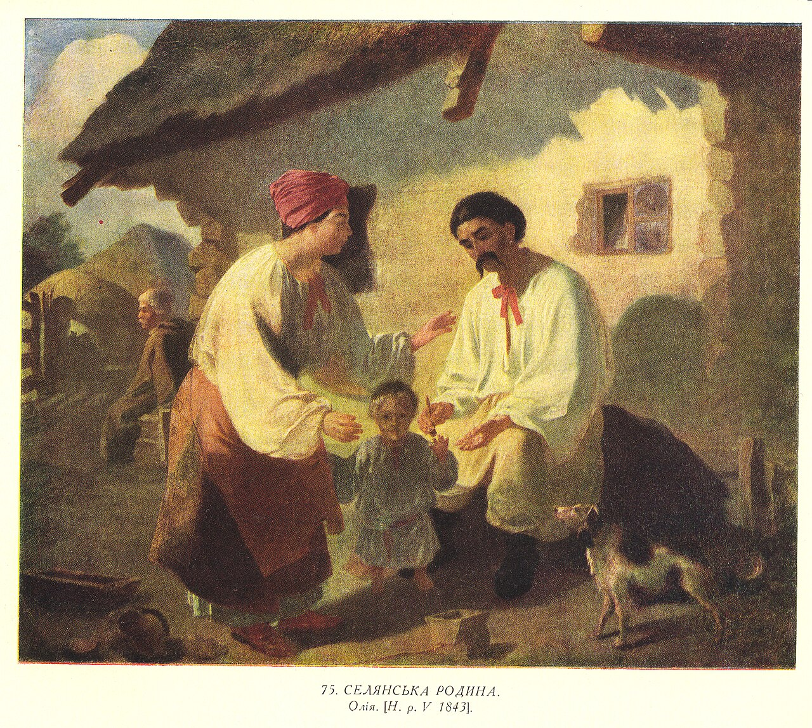
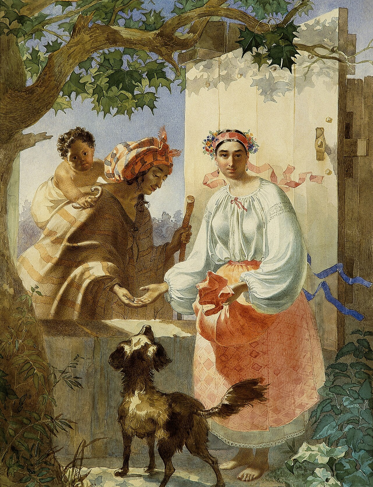
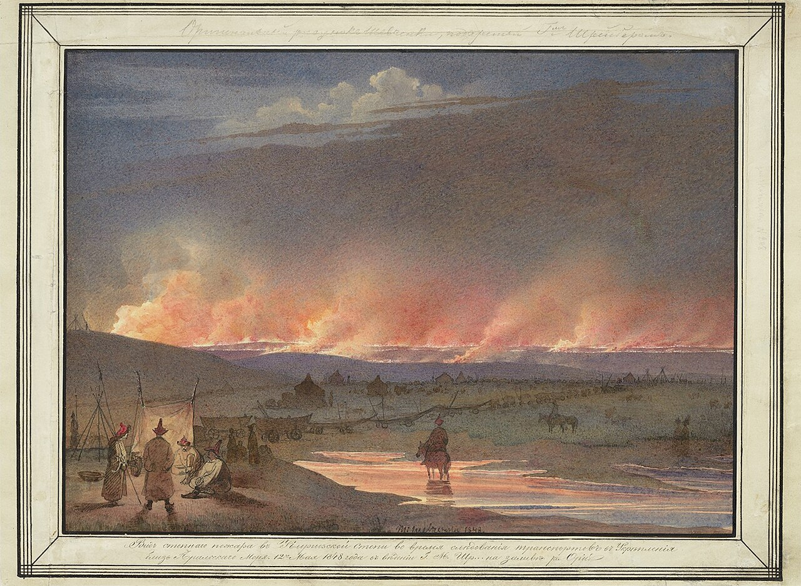
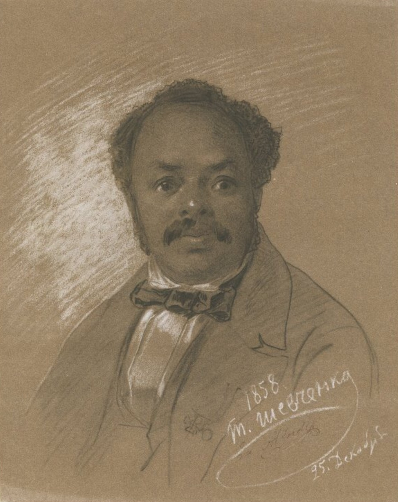
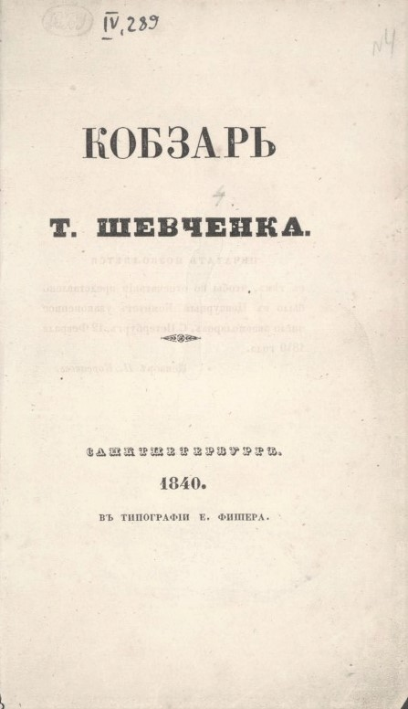
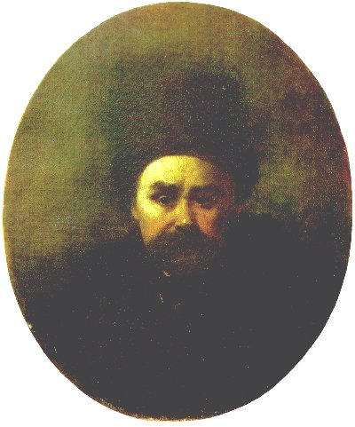

🔍 Збільшити
Катерина
Шедевр українського романтизму. Символічне відображення долі рідної землі.
🏛️ Національний музей Т. Шевченка, Київ
Мало хто знає, що за життя Шевченка шанували насамперед як першокласного художника, а згодом — удостоїли престижного звання академіка гравіювання. Натисніть на будь-яку роботу, щоб відкрити її в повному масштабі.

Шедевр українського романтизму. Символічне відображення долі рідної землі.

26-річний вільний митець після виходу першого легендарного «Кобзаря».

Тепла поетична ода українській родині та родинному затишку.

Твір, за який Академія мистецтв нагородила Шевченка срібною медаллю.

Нічний пал у Казахському степу. Робота часів Аральської експедиції.

Зворушливе свідчення дружби двох вільних людей різних континентів.

Знаковий образ кобзаря з бандурою, що відкрив еру нової літератури.

Легендарна світлина А. Деньєра, зроблена за 2 роки до смерті поета.

Створений за кілька тижнів до смерті. Погляд незламного генія у вічність.